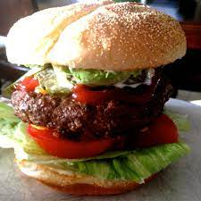

Back
Bronco Burger Recipe

Description
Per Serving: 682 calories; protein 49.3g; carbohydrates 27.3g; fat 40.3g; cholesterol 195.7mg; sodium 955.6mg.
- 5 fresh jalapeno peppers
- 4 pounds ground beef
- salt and pepper to taste
- 1 egg
- ¼ cup steak sauce, (e.g. Heinz 57)
- ¼ cup minced white onion
- 1 teaspoon hot pepper sauce (e.g. Tabasco™)
- 1 pinch dried oregano
- 1 tablespoon Worcestershire sauce
- 1 teaspoon garlic salt
- ¼ cup crushed Fritos® corn chips
- 8 large potato hamburger buns
- 8 slices pepperjack cheese
Steps
- Preheat a grill for high heat. When the grill is hot, roast the jalapeno peppers until blackened on all sides. Place in a plastic bag to sweat and loosen the blackened skin. Rub the skin off, then seed if desired, and chop.
- In a large bowl, use your hands to mix together the chopped jalapenos, ground beef, salt, pepper, egg, steak sauce, onion, hot pepper sauce, oregano, Worcestershire sauce, garlic salt and Fritos®. Divide into 8 balls, and flatten into patties.
- Grill patties for 10 to 15 minutes, turning once, or until well done. I always drink one beer, then flip, drink another beer, then remove from the grill and place on buns. Top each one with a slice of pepperjack cheese and pig out!